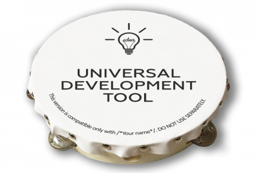
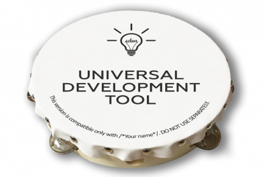

Informācija par izstrādātāju:
Ši lappuse tieks izstrādāta ar Dmitriju Zuboviču. Darba gaita tika izmantots meklēšanas sistēma Google, STARTIT un tamburīns.
Ši lappuse tieks izstrādāta ar Dmitriju Zuboviču. Darba gaita tika izmantots meklēšanas sistēma Google, STARTIT un tamburīns.
